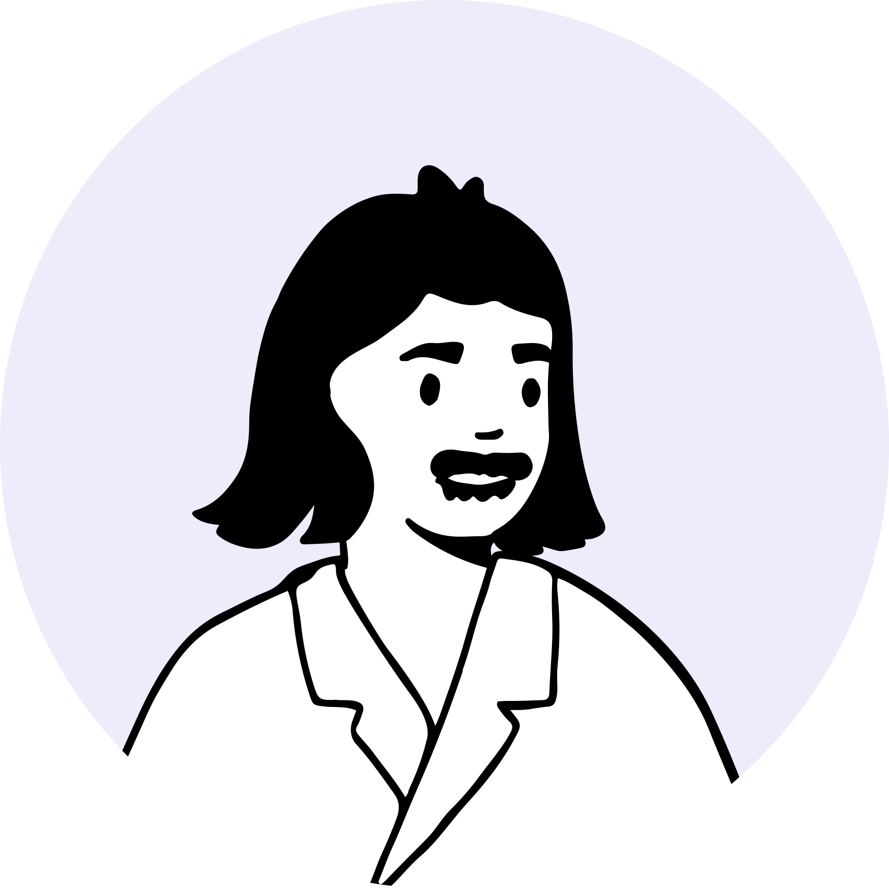
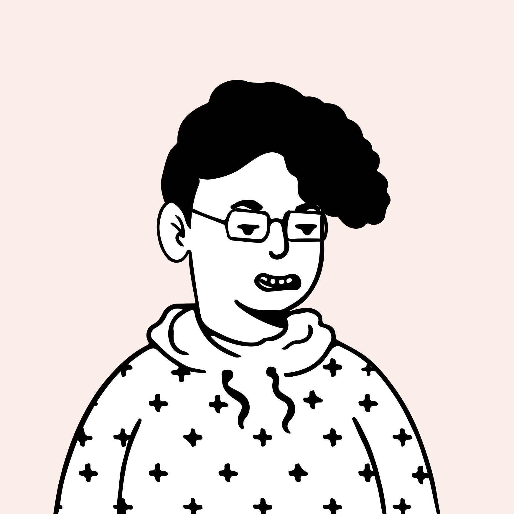
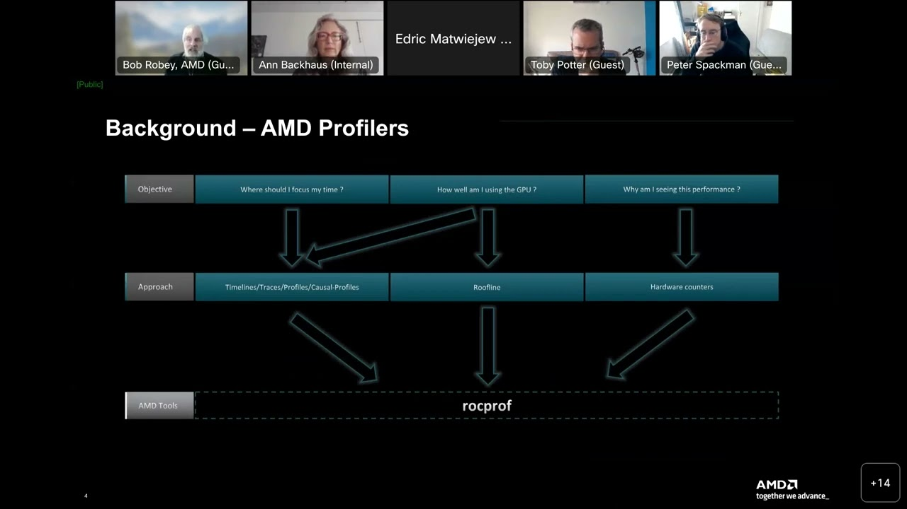

情绪低谷集中在算子开发与调试阶段
情绪低谷集中在算子开发与调试阶段User Journey Map · 环境搭建 → 算子开发 → 调试优化 → 集成发布
01 / 用户旅程
2026
2026
01
环境搭建
⏱ 2–8 hr
02
文档学习
⏱ 1–3 天
03
算子开发
⏱ 1–4 周
04
调试优化
⏱ 持续迭代
05
集成发布
⏱ 数天
触点
Touch
官网文档中心
Driver/CANN 版本矩阵
Docker 镜像仓库
开发者成长地图
API 参考文档
样例库 · 交互式教程
IDE 插件 · 算子模板库
Ascend C 编译器
算子开发向导
MindStudio Profiling
运行日志 · 错误诊断
性能分析看板
atc 导出工具
框架接入文档
CI/CD 流水线 · 镜像仓
行为
Action
查版本矩阵 → 装 Driver + CANN → 验证 Hello World
找成长地图 → 读 API 文档 → 跑官方示例代码
选模板 → 写 Ascend C → 定义 Tiling → 编译验证
Profiling 采集 → 分析瓶颈 → 迭代调优 → 精度对比
导出算子 → 接入框架图 → CI 验证 → 灰度发布
情绪
Emotion
😐
摸索中
😕
找不到头绪
😤
门槛极高
😩
像黑盒
😮💨
终于通了
痛点
Pain
版本依赖复杂，Driver/CANN/框架三者版本须精准匹配，一错全报
报错信息晦涩，只能逐字 Google 错误码，无任何修复引导
文档碎片化，目录层级深，看不到全局结构，不知从何开始
缺端到端可运行示例，示例代码无上下文，无法直接复用
Ascend C 需深懂底层硬件架构，新人上手门槛极高
Tiling 策略设计复杂，缺可视化辅助工具，全凭经验
调试体验如黑盒，只能靠 print 排查，定位一个问题要数天
缺统一可视化 Profiling 时间线，瓶颈来自哪层难以定位
算子导出步骤繁多，中途易出错，排错文档分散
多框架（MindSpore/PyTorch/PaddlePaddle）接入方式不统一
机会点
Opps
一键环境容器，Driver/CANN/框架版本自动匹配锁定
智能报错解析，提供上下文感知的修复建议
AI 生成个性化成长路径，节点直链真实可运行课程
交互式 Notebook 教程，端到端可运行，文档即代码
算子开发向导：模板生成 + 可视化 Tiling 参数配置
Ascend C 代码补全，高亮硬件约束，降低认知负荷
可视化 Profiling 看板：统一时间线 + 一键瓶颈定位
智能错误诊断，直接指向可疑算子 + 修复路径
一键发布流水线，全链路健康检查 + 自动化回归
统一多框架接入指南，标准化接口文档，减少重复踩坑
▢ UCD CENTER
Page 04 · Journey
新设计获好评，调试与环境仍待解Voice of Customer · 原声情感聚类与主题洞察
02 / VOC 分析
2026
2026
情感倾向 · Sentiment（N=320）
正面 58%
中性 27%
负面 15%
320条
原声样本
4.1/5
平均评分
6类
主题聚类
★★★★★
Profiling 看板能直接点到瓶颈算子，框选即缩放，比之前翻日志定位快太多了。

陈 · 框架开发者
AI 平台 · 5 年
“
★★★★★
成长地图让我清楚下一步该学什么，照着路线走不再瞎撞。

刘 · 后端工程师
云服务 · 2 年
“
文档终于连起来了
★★★★★
新的交互式文档把端到端示例串起来了，照着 Notebook 跑半天就通，不用再翻七八个页面。

林 · 算法工程师
互联网 · 3 年

★★★★★
算子开发向导生成骨架后，我只要填核心计算逻辑，省了大量样板代码。
王 · 算子工程师芯片厂商 · 4 年
★★★★★
如果环境能一键拉起来、版本自动对齐，复现实验就不再是噩梦，能省下大量重装和排错的时间。

赵 · 学术研究者
高校 · 博士在读
“
期待全程可视化
★★★★★
调试偶尔还得回到命令行，希望可视化能覆盖到全流程。
“
★★★★★
智能错误诊断给的修复建议挺准，直接点出可疑算子，少跑了好几趟社区。

孙 · 推理优化工程师
自动驾驶 · 6 年

★★★★★
希望文档的中英文版本能同步更新，目前英文版常滞后两三个版本。
周 · 海外开发者Startup · 3 年
▢ UCD CENTER
Page 02 · VOC
文档、调试、环境是三大核心障碍User Research · 2026 Q1 · 关键指标概览
03 / 用户研究
2026
2026
72%
开发者表示文档覆盖不足，找不到连贯的学习路径，上手阶段严重受阻。
58%
开发者陷入调试黑盒，只能靠 print 排查，定位一个问题平均耗时数天。
47%
受版本依赖矩阵复杂度影响，换机器复现实验时遭遇环境配置失败。
▢ UCD CENTER
Page 01 · Stats
资深用户：追求极致性能的内源算子专家User Persona · 内源团队主力
04 / 用户画像 · 形式一
2026
2026

李 · 资深算子工程师
Senior Operator Engineer · 内源团队
标签
8 年经验团队 LeaderAscend C 专家C++ / CUDA
职责
负责高性能融合算子开发与性能调优，沉淀团队算子库与开发规范
原声
性能优化是门手艺，工具得让我看见每一层。
岗位特征
主要工作职责及分配占比
45%
NPU 推理链路
适配与调试
适配与调试
30%
吞吐 / 时延
性能调优
性能调优
25%
文档查阅与
问题排查
问题排查
上下游协同关系
需求来源
推荐/大模型业务方提出上线需求
算法团队交付待部署模型
➤
交付物
昇腾适配推理服务包
性能基线报告与调优方案
算子缺失问题排查记录
KPI推理时延 P99GPU 替换率上线周期
➤
下一步流转
SRE 团队接手灰度上线
业务方验收精度与响应时延
➤
产出去向
线上推理服务正式替换 GPU 集群
典型业务场景及工具
资源获取与问题解决
昇腾社区 · GitCode
推理代码适配
Trae（AI IDE）· 智能体协作
性能 Profiling
MindStudio · 火山引擎监控平台
精度对齐验证
Jupyter Notebook · 内部测评框架
核心痛点
算子行为与 CUDA 存在细微差异，文档描述模糊，只能靠反复试验定位，严重拖慢上线排期
文档碎片化、多版本并存，找到的示例代码不确定是否适配当前 CANN 版本，踩坑成本极高
用通用 AI 助手问昇腾问题，往往得到 CUDA 思路的答案，甚至给出不存在的 API，浪费排查时间
缺乏「从 TensorRT/CUDA 迁移到昇腾」的系统化路径，差异点散落各处，新人上手周期被拉长
性能调优缺乏可落地的 NPU 最佳实践指引，Profiling 数据看得懂但不知下一步优化哪里
遇到算子缺失或 Bug 只能发飞书群等回复，响应时间不可控，影响项目整体节奏
▢ UCD CENTER
Page 06 · 用户画像形式一
生态用户：从竞赛起步、偏理论的高校算子新人User Persona · 生态侧以高校学生与个人开发者为主
05 / 用户画像 · 形式二
2026
2026

◔ 生态用户
高校 AI 算子开发者
高校学生
68%
个人开发者
24%
企业试用
8%
期待的体验
上手快、文档清晰，
样例直接跑通、学习路径明确
样例直接跑通、学习路径明确
学习目标
跑通官方样例 · 完成竞赛 case
个人目标
论文实验提速、技术兴趣探索
发展目标 （部分）
积累昇腾算子经验 · 增强求职竞争力
技能水平低
92% 入门到实践级
入门 35%实践 57%专家 8%
开发语言
81% 半年内用过 Python & C++
竞品经验
19% 接触过 CUDA
前置知识 偏理论、工程经验少、数学基础强
人均熟悉 3.8 项算子开发前置知识（总 8 项）
90% 掌握 Python，46% 掌握并行计算原理
88% 掌握线性数学等数学基础
90% 掌握 Python，46% 掌握并行计算原理
88% 掌握线性数学等数学基础
内源 & 生态用户掌握的前置知识对比
内源用户生态用户
▢ UCD CENTER
Page 07 · 用户画像形式二
竞品已普及统一时间线，CANN 仍缺位Competitive Analysis · Nsight / VTune / rocprof 横向对比
06 / 竞品对照
2026
2026
Timeline 标杆时间线 + 源码跳转，新手零门槛
以 CPU/GPU 统一时间线 为核心，开发者框选即可缩放、定位瓶颈算子，并支持 事件 → 源码一键跳转。配合完善的教程体系，新手也能引导式上手 Profiling，几乎零学习成本。

NVIDIA Nsight Systems
归因深度逐层下钻，瓶颈归因到微架构
提供多种分析类型，热点可 逐层下钻，并给出 微架构级瓶颈归因，直指问题根因。向导式配置分析任务，让性能调优有据可依、不靠猜测，深受系统级开发者青睐。

Intel VTune Profiler
开放协作开源 Web 化，trace 浏览器可分享
走 开源 + Web 化 路线，trace 可导出 Perfetto 在浏览器中查看与 分享。虽以命令行采集为主，但天然适合团队协作与远程复现，可视化门槛低、可扩展性强。

AMD rocprof / Omnitrace
对策
CANN 的 Profiling 看板应对标三家共性——统一时间线 + 一键瓶颈定位 + Web 化可视化，并补齐事件→源码跳转与浏览器端 trace 分享，把命令行门槛降下来。
▢ UCD CENTER
Page 03 · Competitive
设计与开发并行推进，开发是关键路径Roadmap · 2026 H1 设计落地时间线
07 / 实施路线
2026
2026
2 月初
3 月初
4 月初
5 月初
6 月初
Now
设计定稿 · 转入开发
▢ UCD CENTER
Page 05 · Roadmap